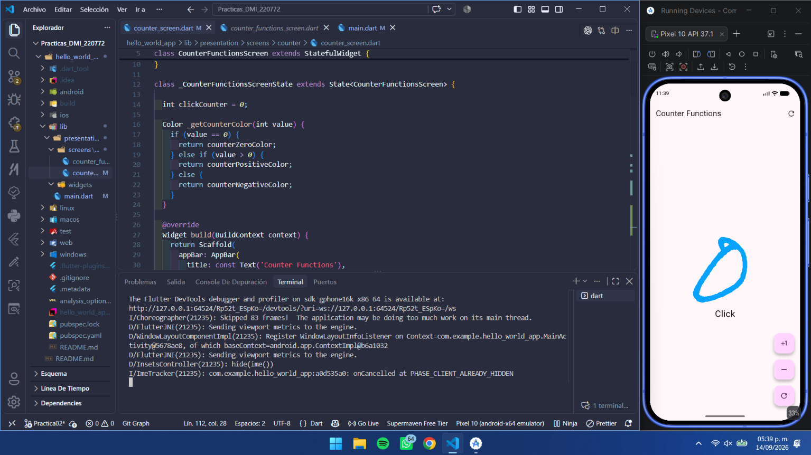
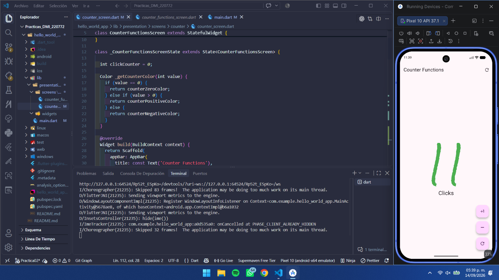
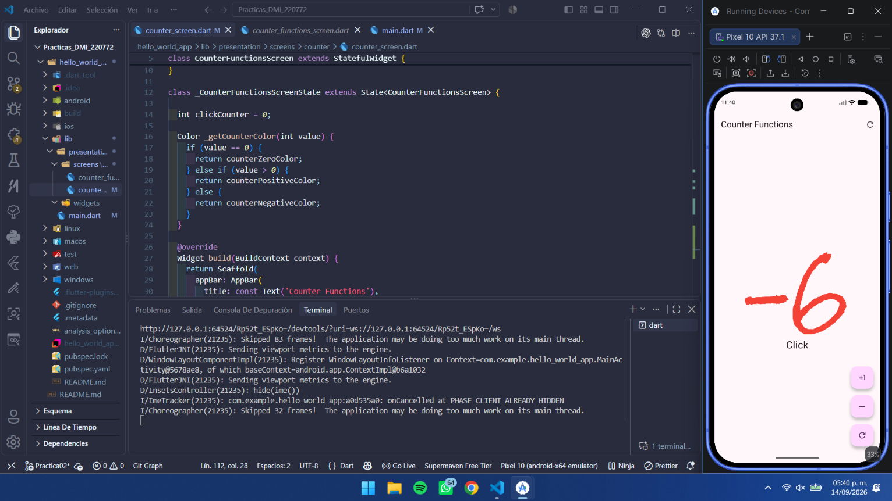
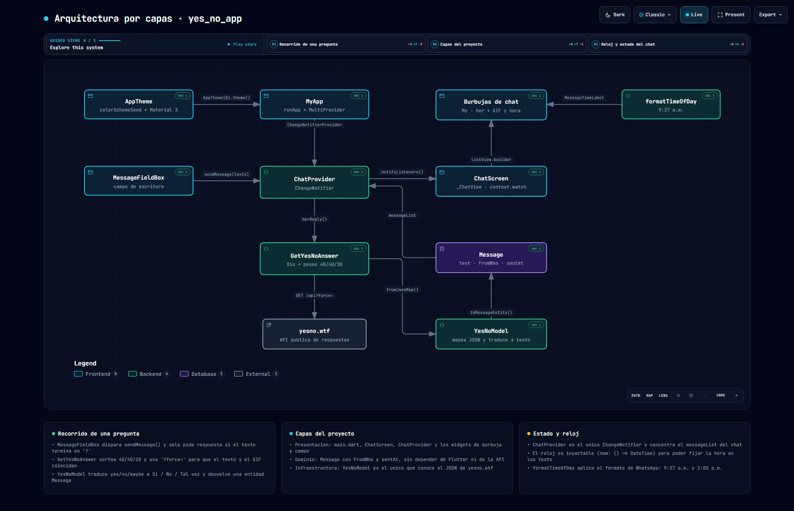
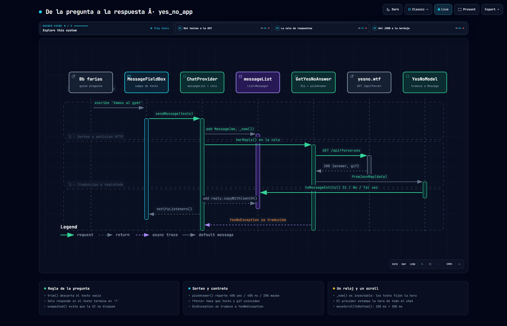
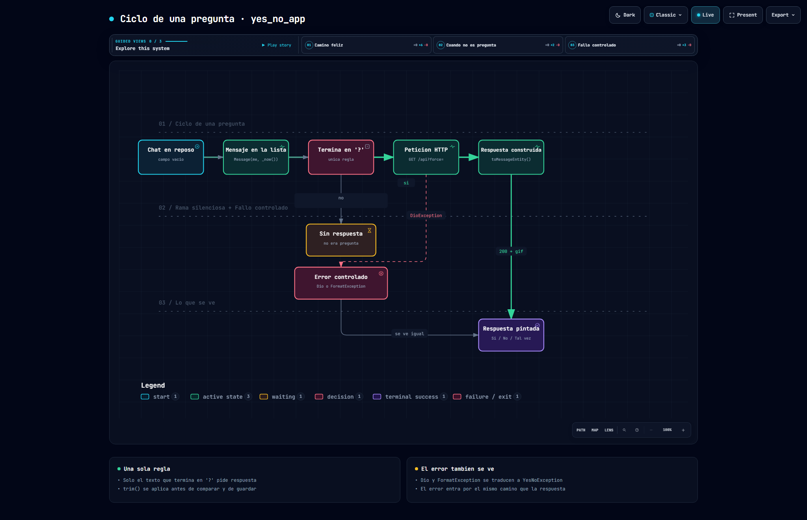
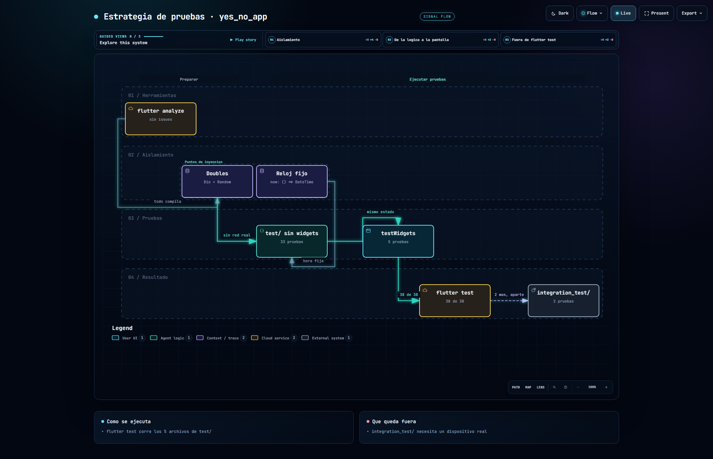

Transcribir en libreta la metodología de evaluación de la asignatura y comprender los criterios de
calificación, las fechas de entrega y las reglas de participation, para saber qué se entrega y cuándo.
Conceptos Clave Aprendidos:
Criterios de evaluación: la nota se compone por unidades y actividades, no por un único parcial.
Potenciadores: cada práctica declara un porcentaje que suma al promedio de la unidad.
Fechas límite: cumplir el calendario es parte de la calificación, no solo del contenido.
Reglas de participación: asistencia, disposición y entregas a tiempo.
Evidencia física
La evidencia de esta práctica es la transcripción en libreta de la metodología de evaluación
impartida por el docente. Al no ser una entrega digital, no hay archivos versionables en este repositorio.
Alcance de esta práctica
Es una práctica teórica: no genera código, diagramas Archify ni pruebas automáticas.
Su valor es establecer el marco de evaluación bajo el que se entregar las Prácticas 2 y 3.
PRÁCTICA 02 — DETALLES Y EVIDENCIA
Mi Primer Aplicación Móvil con Flutter (Contador Funcional)
A continuación se presenta el diagramador interactivo en tiempo real en formato Archify generado para la arquitectura del módulo hello_world_app.
1. Estado Cero / Neutral (0)

El valor del contador inicia en 0 y se renderiza con el color azul dinámico counterZeroColor.
2. Estado Positivo (>0)

Al presionar el botón +1, el contador aumenta y cambia automáticamente a verde counterPositiveColor.
3. Estado Negativo (<0)

Al presionar el botón -1, el valor es menor a 0 y cambia a rojo counterNegativeColor.
Haz clic en cualquier archivo del proyecto para inspeccionar su código fuente directo:
📄 lib/main.dart
📱 counter_functions_screen.dart
⚙️ pubspec.yaml
📜 README.md
Selecciona un archivo...
Objetivo Alcanzado:
Aprender la estructura de proyectos móviles en Flutter, implementación de widgets Stateless/Stateful, control de flujo con setState() y evaluación funcional de temas de color.
Conceptos Clave Aprendidos:
StatefulWidget: Permite modificar el estado interno y re-renderizar componentes dinámicos.
CustomButton: Extracción y encapsulamiento de componentes reusables de UI.
GoogleFonts: Integración de recursos tipográficos externos en Flutter.
Hot Reload & Compilation: Flujo de desarrollo ágil en Flutter SDK.
Cuatro diagramas Archify generados a partir del código real del proyecto
(main.dart, chat_provider.dart, get_yes_no_answer.dart,
yes_no_model.dart y las 5 pruebas unitarias). Son interactivos, tienen modo
claro/oscuro y se pueden exportar.
🏛️ Arquitectura por capas

Dependencias hacia dentro: presentation → infrastructure → domain. 11 componentes y 11 conexiones con 10 referencias de evidencia en el código.
🔄 Secuencia de una respuesta

7 participantes y 11 mensajes: campo → provider → cola → pickAnswer() → yesno.wtf → modelo → burbuja.
🔁 Ciclo de vida de un mensaje

8 estados (idle → done, failed) con 8 transiciones, incluidas las ramas de error y silencio por ausencia de ?.
🧪 Estrategia de pruebas

Del flutter analyze a los 38 tests: qué se inyecta (Dio, Random, reloj) y qué queda fuera de flutter test.
Stack completo empleado en yes_no_app, tomado de pubspec.yaml
y de la cadena de herramientas del entorno de desarrollo.
🧱 Lenguajes y frameworks
Flutter3.47.2 stable
Framework de interfaz multiplataforma y base del tema Material 3 con colorSchemeSeed.
Dart3.13.2
Lenguaje de la app con null safety, expresiones switch, enum y copyWith.
yesno.wtfAPI REST
Servicio público consultado en GET /api?force=yes|no|maybe; devuelve el texto y el GIF.
📦 Paquetes de pubspec.yaml
provider^6.1.5+1
ChangeNotifier + ChangeNotifierProvider: el estado del chat vive fuera de los widgets.
dio^5.11.1
Cliente HTTP con timeouts de 10 s y DioException tipadas por causa, para poder distinguirlas.
flutter_lints^6.0.0
Reglas activadas en analysis_options.yaml; por eso flutter analyze termina sin incidencias.
flutter_launcher_icons^0.14.4
Genera el icono de la app en todas las densidades desde assets/images/me.jpg.
cupertino_icons^1.0.8
Set de iconos con estilo iOS usado en los componentes de la interfaz.
integration_testsdk: flutter
Las 2 pruebas end-to-end que necesitan un emulador o dispositivo real.
🛠️ Herramientas
Android SDK + EmuladorAVD Pixel_10
Ejecuta la app en un dispositivo virtual de 1080×2424 y sirve para las pruebas de integración.
Archify4 diagramas
Genera los diagramas de arquitectura, secuencia, ciclo de vida y estrategia de pruebas en HTML exportable.
VS Code / Android Studioedición y depuración
Entorno de trabajo con hot reload, breakpoints y el inspector de widgets de Flutter.
Git + GitHub Pagesversionado
Control de versiones del código y publicación de este portafolio y de los diagramas interactivos.
🏛️ Conceptos y patrones aplicados
Concepto
Dónde se aplica en el código
Arquitectura por capas
domain → infrastructure → presentation → config, con la dependencia siempre hacia dentro.
Inyección de dependencias
Por constructor entran Dio, Random, AnswerWeights y el reloj en ChatProvider.
Gestión de estado declarativa
ChangeNotifier + context.watch<ChatProvider>() redibuja la lista con cada notifyListeners().
Composición sobre herencia
MyApp arma el MultiProvider; las pantallas solo consumen estado, no lo crean.
Errores tipados
Todo DioException y FormatException sale de la capa de datos como YesNoException.
Serialización de peticiones
Cadena de Future en herReply() para que dos respuestas nunca se intercalen.
Pruebas con dobles
Dio y Random falsos más reloj congelado: 38 tests en el host, sin red.
flutter analyze — sin incidencias
El análisis estático no reporta ni un solo issue en lib/ ni en test/.
flutter test — 38 / 38
Las 38 pruebas unitarias y de widgets pasan en el host, sin red y sin esperas reales.
yes_no_model_test
10
answer_weights_test
9
chat_provider_test
9
format_time_of_day_test
5
widget_test
5
Fuera de flutter test
integration_test/chat_flow_test.dart contiene 2 pruebas que necesitan un dispositivo o emulador real, por lo que no las cuenta el flutter test del host.
📄 Evidencia completa
La salida íntegra de flutter analyze y flutter test --reporter expanded está en:
Haz clic en cualquier archivo para inspeccionar su código fuente:
🧠 chat_provider.dart
🌐 get_yes_no_answer.dart
🗄️ yes_no_model.dart
📄 main.dart
Selecciona un archivo...
🎯 Objetivo de la práctica
Construir una aplicación móvil con Flutter que consuma un servicio web externo
manipulando la capa de datos, aplicando arquitectura por capas,
inyección de dependencias y manejo de errores tipado, y acompañándola
con una batería de pruebas automatizadas y diagramas de arquitectura documentados.
✅ Objetivos específicos cumplidos
Separar la lógica en capas claras: domain, infrastructure, presentation y config.
Desacoplar la lógica de negocio de Flutter mediante la entidadMessage.
Manejar errores de red con la excepción propiaYesNoException en lugar de excepciones crudas.
Hacer la lógica testeable inyectando Dio, Random y el reloj por el constructor.
Cubrir la lógica con 38 pruebas unitarias, de modelo y de widgets, más 2 de integración.
🧠 Cosas aprendidas
1
Dart moderno: las expresiones switch y el pattern matching (on DioException catch) permiten un manejo de errores exhaustivo sin if/else anidados.
2
Null safety obliga a decidir:String? imageUrl y DateTime? sentAt hacen explícito qué se hace cuando no hay dato, que es lo que evita los null en la UI.
3
StatelessWidget no significa sin estado: el estado puede vivir en un provider externo; el widget solo se redibuja con context.watch.
4
notifyListeners() y dispose() van juntos: hay que liberar el ScrollController a mano para no dejar fugas de memoria.
5
Las capas existen para poder testear: como domain no importa nada de Flutter, Message se prueba sin levantar un solo widget.
6
Inyectar el reloj hace deterministas las pruebas: si la hora saliera de un DateTime.now() interno, cada test sería intermitente.
7
Un error de red no es un error de negocio: envolver DioException en YesNoException mantiene el cliente HTTP fuera de la capa de presentación.
8
Validar el JSON en el modelo:YesNoModel.fromJsonMap lanza FormatException si answer no es texto, en vez de fallar más lejos sin contexto.
9
La condición de carrera era real: dos preguntas seguidas sí intercalaban las respuestas; la cola de Future en herReply() lo resolvió de raíz.
10
flutter test y integration_test son cosas distintas: las primeras corren en el host con dobles; las de integración usan la app real y necesitan emulador.
11
flutter analyze es parte del entregable: un proyecto sin lints es un proyecto documentado por el analizador.
12
Un diagrama que no viene del código miente: los 4 diagramas Archify se generaron verificando referencias contra los archivos reales.
📌 Conclusiones
La inyección de dependencias fue lo que hizo posible testear: sin Dio, Random y reloj inyectables, las pruebas dependerían de red y de tiempo real.
Traducir los DioException a un único YesNoException evitó que la capa de presentación conociera el cliente HTTP.
La cola con Future evitó una condición de carrera real: dos preguntas seguidas ya no intercalan sus respuestas.
Separar la entidad Message del DTO YesNoModel permitió probar el dominio sin levantar Flutter.
La evidencia ejecutable (analyze + 38 pruebas) y los diagramas complementan la memoria del proyecto: documentan lo que el código efectivamente hace.